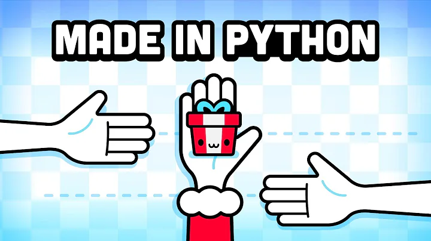

Making a Game in Python with No Experience
1.2M views · 11 months ago


the desire to be sad: "tragically beautiful" art & romanticizing mental illness
3.2M views · 1 year ago


Surviving Off Gas Station Food For 30 Days
158k views · 2 weeks ago

Hand-Making 480 Desserts Each Night at a 2 Michenlin Star Restaurant | On the line | Bon Appetit
1.7M views · 3 months ago

Harvard Professor Explained Algorithms in 5 Levels of Difficulty | WIRED
1M views · 1 months ago
Presidential Pets: a Brief History
2.4M views · 3 days ago